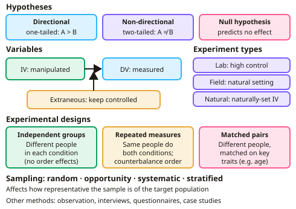

GCSE Psychology · Topic 3
Research methods
Research methods is about how psychologists design studies, collect data, and analyse results ethically.
We will study experiments, other research methods, sampling and variables.
Then we use maths skills to analyse data, consider ethics, and plan and write up a practical investigation.
- 4 subtopics
- 216 questions
- Free: 3.1 notes and 10 questions
In this topic
- 3.1Research designFree below · 20 questions
- 3.2Data, analysis and ethicsOpen in Full Marks · 71 questions
- 3.3Maths skills: graphs, percentages, ratios, fractions, probability and significant figuresOpen in Full Marks · 83 questions
- 3.4Planning, carrying out and writing up a practical investigation (hypotheses, sampling, controls, pilot study)Open in Full Marks · 42 questions
3.1 · Free notes
Research design

Key points
- Hypotheses: a directional (one-tailed) hypothesis predicts the direction of results; a non-directional (two-tailed) hypothesis predicts a difference without direction. The null hypothesis predicts no effect.
- The independent variable is manipulated; the dependent variable is measured; extraneous variables must be controlled.
- Experiment types: laboratory (high control, lower ecological validity), field (natural setting, less control) and natural (naturally occurring IV).
- Experimental designs: independent groups, repeated measures (risk of order effects, countered by counterbalancing) and matched pairs.
- Other methods: observation, interviews, questionnaires, case studies and correlations.
- Sampling: random, opportunity, systematic and stratified — each affecting how representative the sample is.
In more detail
- Worked hypothesis: directional — "Students who revise with music will recall fewer words than those who revise in silence"; null — "There will be no difference in recall."
- Variables: IV = music or silence; DV = number of words recalled; controlled = word list, time, room.
- Designs: independent groups (different people per condition), repeated measures (same people in both) and matched pairs.
- Counterbalancing: half do condition A then B, half B then A, to cancel out order effects.
- Experiment types: laboratory (high control), field (natural setting) and natural (the IV occurs naturally).
Practice
Research design: 10 questions
Pick an answer to check it, or open the answer for the explanation.
1. What is the independent variable?
- The variable measured
- The variable manipulated by the researcher
- A variable kept constant
- A confounding variable
Show answer
B: The variable manipulated by the researcher. The dependent variable is what gets measured.
2. What does the null hypothesis state?
- There will be a difference
- There will be no difference or effect
- The study is invalid
- The sample is biased
Show answer
B: There will be no difference or effect. Researchers test whether results allow them to reject it.
3. What is a strength of laboratory experiments?
- High ecological validity
- High control over variables, allowing cause and effect conclusions
- No demand characteristics
- No ethical issues
Show answer
B: High control over variables, allowing cause and effect conclusions. The trade-off is often lower ecological validity.
4. Which design risks order effects?
- Independent groups
- Repeated measures
- Matched pairs
- Natural experiment
Show answer
B: Repeated measures. Counterbalancing helps control practice and fatigue effects.
5. What is opportunity sampling?
- Selecting names at random
- Using participants who are readily available
- Selecting every 5th person
- Matching participants on key variables
Show answer
B: Using participants who are readily available. It is convenient but often unrepresentative.
6. What is the dependent variable in an experiment?
- The variable manipulated by the researcher
- The variable that is measured as an outcome
- A variable kept constant
- An uncontrolled variable
Show answer
B: The variable that is measured as an outcome. It is expected to change as a result of the independent variable.
7. Which of these is a non-directional (two-tailed) hypothesis?
- Pupils who sleep 8 hours will score higher than pupils who sleep 4 hours
- There will be a difference in test scores between pupils who sleep 8 hours and 4 hours
- Sleep will have no effect on test scores
- Pupils who sleep less will score lower on a test
Show answer
B: There will be a difference in test scores between pupils who sleep 8 hours and 4 hours. A non-directional hypothesis predicts a difference without saying which way. The others either predict a direction or state no effect (null).
8. A psychologist compares anxiety in pupils before and after a flood hit their town. She did not cause the flood. Which type of experiment is this?
- Laboratory experiment
- Field experiment
- Natural experiment
- Matched pairs experiment
Show answer
C: Natural experiment. In a natural experiment the IV (the flood) occurs naturally and is not manipulated by the researcher. A matched pairs design is not a type of experiment setting.
9. Researchers test whether litter on a real street affects how many people drop rubbish. What is a limitation of this field experiment?
- It cannot have an independent variable
- Results will have very low ecological validity
- Participants always know they are being studied
- Extraneous variables are harder to control
Show answer
D: Extraneous variables are harder to control. Field experiments take place in natural settings, so variables such as weather and passers-by are harder to control. Their ecological validity is usually high.
10. Pairs of participants are matched on IQ, then one from each pair is put in each condition. Which experimental design is this?
- Repeated measures
- Counterbalanced design
- Independent groups
- Matched pairs
Show answer
D: Matched pairs. Matched pairs uses different but similar participants in each condition, matched on a relevant variable. Counterbalancing is a way of controlling order effects, not a design.
Keep going in Full Marks
Full Marks has 20 questions on Research design (10 more than here), set out in practice levels. You also get notes and 3D models for all 4 subtopics of Research methods, plus games, timed exams and past papers.